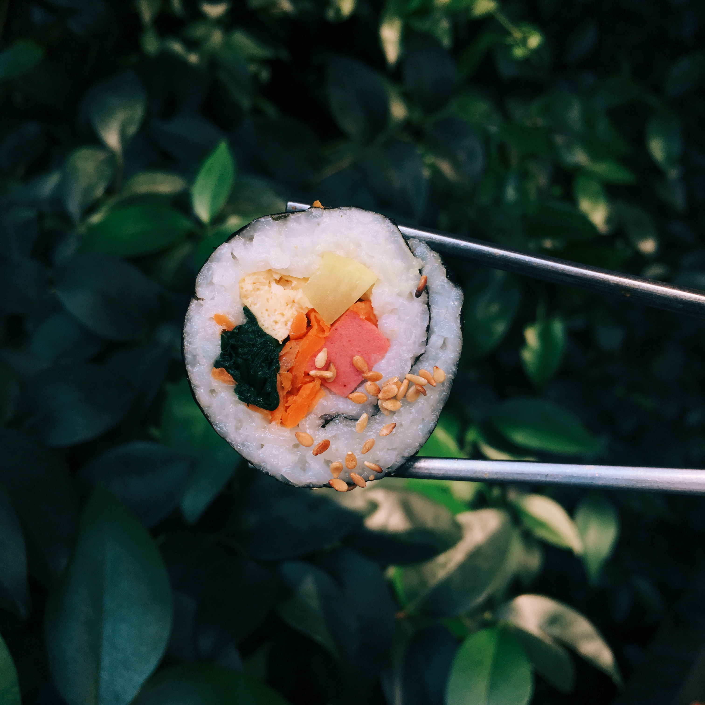

Bem vindo(a) ao Akikomo
Localizada no coração da cidade o restaurante Akikomo traz para o mercado o que há de melhor para suas refeições. Fundadada em 2022, o restaurante Akikomo já é destaque na cidade e conquista novos clientes a cada dia.
Nossa missão é:"Proporcionar um ambiente de relaxamento com uma alimentação saudável e de qualidade para nossos clientes".
Oferecemos profissionais experientes e antenados ás mudanças no mundo culinário. O atendimento possui padrão de excelência e agilidade, garantindo qualidade e satisfação.
Aqui é garatindo
- Atendimento de qualidadade
- Espaço diferenciado
- Boa Localização
- Profissionais qualificados
- Ingredientes de qualidade
- Local sempre bem higienizado

Venha nos visitar
Nosso estabelecimento está localizado no coração da cidade